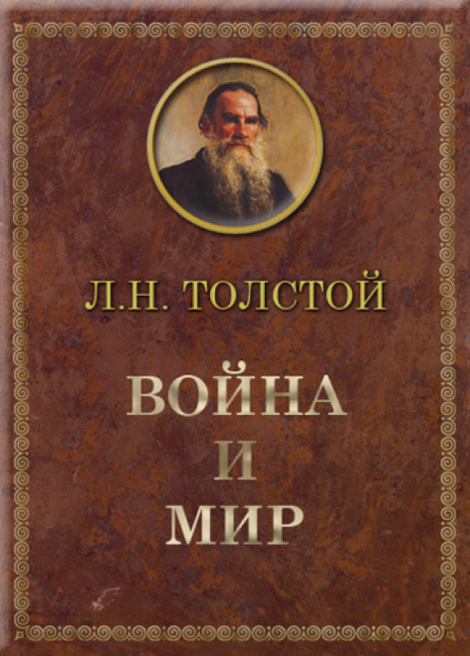

Война и мир. |
|
|---|---|
|  |
Тип: Книга Издательство: АСТ, Астрель ISBN: 5-17-006400-4,978-5-17-006400-7 Год: 1867 г Тип издания: Авторский сборник Язык: Русский Страниц: 704 стр. Формат: ePub Переплет: Твердый переплет Дата размещения: Жанр:Русская классика, Литература 19 века URL: http://babulenkin-servant.com/books/war_and_peace.epub Описание: Великий роман-эпопея Льва Толстого чудесным образом, как огромная мозаика, сложен из тысяч картин - батальных, бальных, любовных, бытовых, политических, философских, портретных, пейзажных, психологических... |
 |
Автор: Лев Николаевич Толстой Дата рождения: Дата смерти: Место рождения:Ясная Поляна, Тульская губерния, Российская империя Род деятельности: прозаик, публицист, философ |
Harry Potter and the Sorcerer's Stone |
|
 |
Тип: Книга Издательство: АСТ, Астрель ISBN: 978-0439708180 Год: 1998 г Язык: English Страниц: 309 стр. Формат: pdf Переплет: Мягкий переплет Дата размещения: Жанр: Fantasy, Adventure, Kids & Family URL:http://babulenkin-servant.com/books/potter.pdf Описание: Harry Potter has no idea how famous he is. That's because he's Сbeing raised by his miserable aunt and uncle who are terrified Harry will learn that he's really a wizard, just as his parents were. |
 |
Автор: J. K. Rowling Дата рождения: Дата смерти: — Место рождения: Глостершир, Англия Род деятельности: прозаик URL: jkrowling.com Адрес: 50 Bedford Square, London Email: info@jkrowlingpr.com |
Titanic |
|
 |
Тип: Фильм Год: 1997 Страна: США Слоган: «Ничто на Земле не сможет разлучить их» Режиссер: Джеймс Кэмерон Сценарий: Джеймс Кэмерон Продюсер: Джеймс Кэмерон, Джон Ландау, Памела Исли Оператор: Рассел Карпентер Композитор: Джеймс Хорнер Художник: Питер Ламонт, Мартин Лэйн, Чарльз Дуайт Ли Монтаж: Конрад Бафф IV, Джеймс Кэмерон, Ричард А. Харрис Жанр: драма, мелодрама Дата размещения: URL: http://babulenkin-servant.com/films/titanic.mp4 Описание: Молодые влюбленные Джек и Роза находят друг друга в первом и последнем плавании «непотопляемого» Титаника. Они не могли знать, что шикарный лайнер столкнется с айсбергом в холодных водах Северной Атлантики, и их страстная любовь превратится в схватку со смертью. |
 |
Автор: Джеймс Кэмерон Дата рождения: Дата смерти: – Место рождения: Капускасинг, Онтарио, Канада Род деятельности: продюсер, режиссер, сценарист, актер |